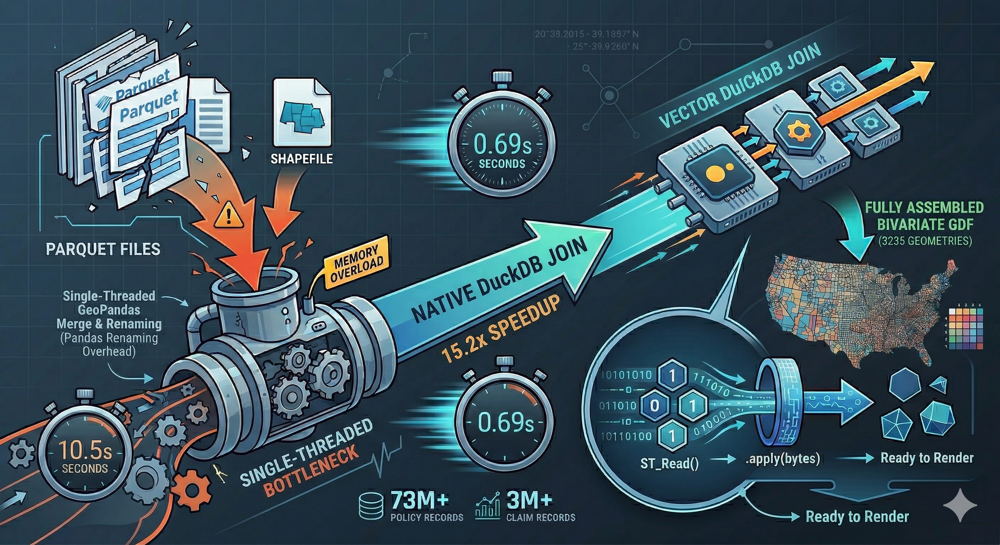

⚡ TL;DR
- The Task: Map 73M+ FEMA NFIP policy records and 3M+ claims (since 1978) to U.S. county boundaries
- The Bottleneck: A Pandas/GeoPandas pipeline that took 10.5s and consumed significant memory
- The Fix: A single DuckDB SQL query using the
spatialextension
- The Result: 0.69 seconds (15.2x faster)
This post walks through how I optimized a real-world FEMA geospatial pipeline using DuckDB and why it significantly outperforms Pandas for large-scale spatial joins.

In geospatial data workflows, waiting often feels like part of the job.
Kick off a heavy join.
Watch the kernel spin.
Maybe grab a coffee—and hope nothing crashes.
While analyzing FEMA’s National Flood Insurance Program (NFIP) dataset—spanning nearly 50 years of flood insurance data across the United States—I hit exactly that wall.
I needed to:
Normally, I’d reach for Pandas + GeoPandas without thinking twice.
This time, I didn’t.
Instead, I pushed everything into DuckDB—and it changed everything.
I ran a strict head-to-head comparison:
| Metric | Pandas.Pipeline | Native.DuckDB.Pipeline |
|---|---|---|
| Execution Time | 10.49 seconds | 0.69 seconds |
| Speedup | 1.0x | 15.2x faster |
Even with careful tuning, Pandas just couldn’t keep up.
Here’s what the typical workflow looked like:
import duckdb
import pandas as pd
import geopandas as gpd
# 1. Read files into RAM
con = duckdb.connect()
claims_df = con.execute("""
SELECT countyCode, netBuildingPaymentAmount
FROM read_parquet('../data/FimaNfipClaimsV2.parquet')
""").df()
policies_df = con.execute("""
SELECT countyCode, policyCount, totalBuildingInsuranceCoverage
FROM read_parquet('../data/FimaNfipPoliciesV2.parquet')
""").df()
con.close()
# 2. Aggregate millions of rows (Single-threaded)
claims_agg = (claims_df.dropna(subset=['countyCode'])
.groupby('countyCode')
.agg(avg_claim_amt=('netBuildingPaymentAmount', 'sum'))
.reset_index())
policies_agg = (policies_df.dropna(subset=['countyCode'])
.groupby('countyCode')
.agg(total_policies=('policyCount', 'sum'),
avg_coverage=('totalBuildingInsuranceCoverage', 'sum'))
.reset_index())
# 3. Clean and Join
agg_df = pd.merge(claims_agg, policies_agg, on='countyCode', how='outer')
agg_df = agg_df.rename(columns={'countyCode': 'GEOID'})
agg_df['GEOID'] = agg_df['GEOID'].astype(str).str.zfill(5)
# 4. Spatial Merge
counties = gpd.read_file('../data/tl_2025_us_county/tl_2025_us_county.shp')
counties = counties[['GEOID', 'STATEFP', 'geometry']]
merged_gdf = counties.merge(agg_df, on='GEOID', how='left')groupby operationsIt works—but it doesn’t scale.
Instead of bouncing between tools, I let DuckDB handle everything:
import duckdb
import pandas as pd
import geopandas as gpd
def load_and_join_all_in_duckdb():
con = duckdb.connect()
con.execute("INSTALL spatial; LOAD spatial;")
# Unified SQL query for aggregation and spatial join
query = """
WITH aggregated_claims AS (
SELECT
lpad(cast(countyCode AS VARCHAR), 5, '0') AS GEOID,
sum(netBuildingPaymentAmount) AS avg_claim_amt
FROM read_parquet('../data/FimaNfipClaimsV2.parquet')
WHERE countyCode IS NOT NULL
GROUP BY 1
),
aggregated_policies AS (
SELECT
lpad(cast(countyCode AS VARCHAR), 5, '0') AS GEOID,
sum(policyCount) AS total_policies,
sum(totalBuildingInsuranceCoverage) AS avg_coverage
FROM read_parquet('../data/FimaNfipPoliciesV2.parquet')
WHERE countyCode IS NOT NULL
GROUP BY 1
),
counties_shapefile AS (
SELECT
GEOID,
STATEFP,
ST_AsWKB(geom) AS geometry
FROM ST_Read('../data/tl_2025_us_county/tl_2025_us_county.shp')
)
SELECT
s.GEOID, s.STATEFP, p.total_policies,
p.avg_coverage, c.avg_claim_amt, s.geometry
FROM counties_shapefile s
LEFT JOIN aggregated_policies p ON s.GEOID = p.GEOID
LEFT JOIN aggregated_claims c ON s.GEOID = c.GEOID
"""
df = con.execute(query).df()
con.close()
# Cast bytearray to strict bytes for Shapely compatibility
df['geometry'] = df['geometry'].apply(bytes)
# Final Handoff to GeoPandas
df['geometry'] = gpd.GeoSeries.from_wkb(df['geometry'])
return gpd.GeoDataFrame(df, geometry='geometry', crs="EPSG:4269")
if __name__ == "__main__":
gdf = load_and_join_all_in_duckdb()The speedup wasn’t just about switching tools—it came from changing where the work happens.
The biggest win? The raw datasets never enter Python memory.
Instead of pulling tens of millions of rows into Pandas, DuckDB does all the heavy lifting internally—and only returns the final, compact result.
Everything runs in one place:
ST_Read()No handoffs. No intermediate DataFrames. No extra overhead.
Because everything is defined in a single SQL query:
left_on / right_on gymnastics during joinsWhat you select is exactly what you get.
Geospatial data is usually expensive to move around.
Instead of passing full geometry objects, DuckDB serializes them as WKB (Well-Known Binary):
This makes the Python handoff surprisingly fast.
DuckDB returns geometry as a bytearray, but GeoPandas expects bytes. Easy fix—but easy to miss. A simple fix:
df['geometry'] = df['geometry'].apply(bytes)Moving your join logic out of Pandas and into native SQL is one of the highest-ROI changes you can make for large geospatial datasets. It ensures clean data filtering at the source and provides a massive performance leap. You’ll get:
And honestly… fewer coffee breaks waiting for your code to finish ☕